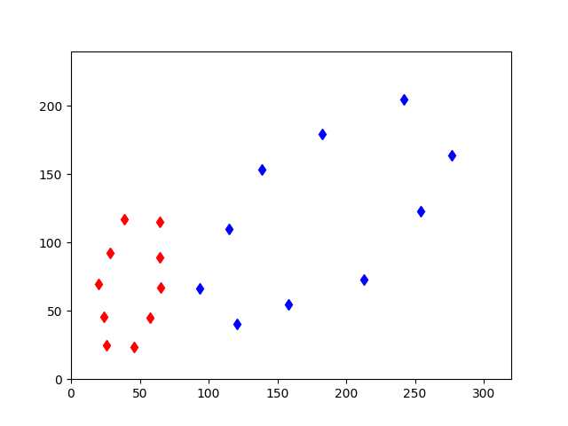
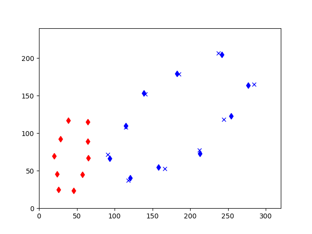
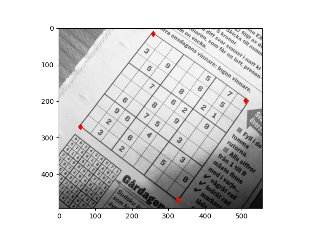
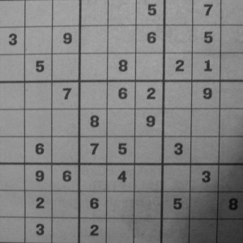

İki Boyut Nokta Eşleşmesi, Homografi, Video Stabilizasyonu
Oldukça çok ortaya çıkan bir imaj işleme problemi şudur: elimizde iki nokta grubu var, bu noktaların arasındaki eşleşmeyi biliyoruz. Öyle bir $H$ ilişkisi bulmak istiyoruz ki verili $x$ noktasınının (homojen) kordinatını $x'$ noktasına taşısın, yani eldeki her veri noktasının ima ettiği eşleşmeyi bulsun.
Örnek
x1 = [[25.8064516129,25.0],[23.87096,45.625],
[20.0,69.375],[28.387,92.5],
[38.709,116.875],[64.5161290323,115.0],
[64.516,89.375],[65.16,66.875],
[57.4193,45.0],[45.80645,23.75]]
x2 = [[93.548,66.25],[114.838,110.0],
[138.709,153.125],[182.580,179.375],
[241.935,204.375],[276.77,163.75],
[254.193,123.125],[212.903,73.125],
[158.064,54.375],[120.6451,40.625]]
x1 = np.array(x1)
x2 = np.array(x2)
plt.plot(x1[:,0], x1[:,1], 'rd')
plt.plot(x2[:,0], x2[:,1], 'bd')
plt.xlim(0,320)
plt.ylim(0,240)
plt.savefig('vision_30vstab_02.png')

Yani kırmızı noktaları mavi noktalara çeviren ilişkiyi arıyoruz. Bu transformasyonda ne var? Sağa doğru bir yer değiştirme (translation), ölçekleme (scaling), ve saat yönüne doğru bir döndürme (rotation). Bu tür 2D-2D ilişkilerine homografi adı veriliyor. Aradığımız alttaki türden bir formül [3],
$$ x' = H x$$
yani her $x$ noktası $H$ üzerinden $x'$ haline gelecek. $H$ matrisi homojen kordinatları baz alır,
$$ \left[\begin{array}{r} x' \\ y' \\ w' \end{array}\right] \left[\begin{array}{rrr} h_1 & h_2 & h_3 \\ h_3 & h_4 & h_5 \\ h_6 & h_7 & h_8 \end{array}\right] \left[\begin{array}{r} x \\ y \\ w \end{array}\right] $$
$H$ matrisinin bazı şekilleri vardır, mesela
$$ \left[\begin{array}{r} x' \\ y' \\ 1 \end{array}\right] \left[\begin{array}{rrr} a_1 & a_2 & t_x \\ a_3 & a_4 & t_y \\ 0 & 0 & 1 \end{array}\right] \left[\begin{array}{r} x \\ y \\ 1 \end{array}\right] $$
Ya da matris içindeki bölgeleri vektör / matrisler ile özetlersek,
$$ x' = \left[\begin{array}{rr} A & t \\ 0 & 1 \end{array}\right] x $$
Üstteki transformasyona ilgin transformasyonu (affine transformation) deniyor, yamultma (warping) denen işlem budur. Bu transformasyon $w=1$ şartını korur.
Eğer $H$ şu türden olursa,
$$ \left[\begin{array}{r} x' \\ y' \\ 1 \end{array}\right] \left[\begin{array}{rrr} s\cos(\theta) & -s\sin(\theta) & t_x \\ s\sin(\theta) & s\cos(\theta) & t_y \\ 0 & 0 & 1 \end{array}\right] \left[\begin{array}{r} x \\ y \\ 1 \end{array}\right] $$
Ya da
$$ x' = \left[\begin{array}{rr} sR & t \\ 0 & 1 \end{array}\right] x $$
Dönüş $R$, taşınma $t$, dönme $\theta$, ölçekleme $s$. Bu transformasyona ölçeklemeye (scaling) izin veren bir katı (rigid) transformasyon deniyor. "Katı" demek $s=1$, yani noktalar arası mesafeler değişmeyecek demek, daha büyük $s$ ile tabii ölçekleme olabilir, mesafeler artabilir, ama mesafe oranları yine aynı kalır, ayrıca döndürme de -rotation- yapılabilir. Bu transformasyona yansıtsal (projective) ismi de verilir. Yansıtsal transformasyonun ilgin transformasyondan daha esnek / kuvvetli olduğu bilinir.
Not: ilgin transformasyon ve onu kestirme hesabı bazen literatürde iki boyutlu kordinat sisteminde ve $x' = R x + t$, yani rotasyon artı yer değişimi gibi bir formda da görülebilir, biz homojen sisteme geçerek her ikisini aynı matris $H$ içinde ve tek çarpım operasyonu ile gösterebilmiş oluyoruz. Homojen, tek matrisli formda hesap yapmak daha kolay.
Homografi hesabının kullanım alanları geniş; mesela elde olan iki imaj arasında birbirine uyan noktaları biliyorsak, $H$'yi hesaplayarak tüm imaj üzerinde bir değişim matrisi hesaplamış oluruz.
Yansıtsal $H$ hesabı için direk lineer transform (direct linear transform -DLT-) tekniği var. Eldeki tüm eşleşmeler için alttaki sistemi yaratırız,
$$ \left[\begin{array}{rrrrrrrrr} -x_1 & -y_1 & -1 & 0 & 0 & 0 & x_1x_1' & y_1x_1' & x_1' \\ 0 & 0 & 0 & -x_1 & -y_1 & -1 & x_1y_1' & y_1y_1' & y_1' \\ -x_2 & -y_2 & -1 & 0 & 0 & 0 & x_2x_2' & y_2x_2' & x_2' \\ 0 & 0 & 0 & -x_2 & -y_2 & -1 & x_2y_2' & y_2y_2' & y_2' \\ & \vdots & & \vdots & & \vdots & & \vdots & \end{array}\right] \left[\begin{array}{r} h_1 \\ h_2 \\ h_3 \\ h_4 \\ h_5 \\ h_6 \\ h_7 \\ h_8 \\ h_9 \end{array}\right] = 0 $$
Bu sistem $x' - Hx = 0$ sistemini temsil etmiş oluyor, ne kadar fazla nokta olursa üstteki matris o kadar aşağı doğru genişleyecektir (öğe ayarlaması öne göre yapılacak tabii). Mükemmel $H$ bulunamayabilir, ama sıfıra olabildiğince yaklaşmak için üstteki problemi bir minimizasyon problemi olarak görürüz, SVD bu çözümü bize sağlar.
import numpy.linalg as lin
def H_from_points(fp,tp):
if fp.shape != tp.shape:
raise RuntimeError('number of points do not match')
m = np.mean(fp[:2], axis=1)
maxstd = np.max(np.std(fp[:2], axis=1)) + 1e-9
C1 = np.diag([1/maxstd, 1/maxstd, 1])
C1[0][2] = -m[0]/maxstd
C1[1][2] = -m[1]/maxstd
fp = np.dot(C1,fp)
m = np.mean(tp[:2], axis=1)
maxstd = np.max(np.std(tp[:2], axis=1)) + 1e-9
C2 = np.diag([1/maxstd, 1/maxstd, 1])
C2[0][2] = -m[0]/maxstd
C2[1][2] = -m[1]/maxstd
tp = np.dot(C2,tp)
nbr_correspondences = fp.shape[1]
A = np.zeros((2*nbr_correspondences,9))
for i in range(nbr_correspondences):
A[2*i] = [-fp[0][i],-fp[1][i],-1,0,0,0,
tp[0][i]*fp[0][i],tp[0][i]*fp[1][i],tp[0][i]]
A[2*i+1] = [0,0,0,-fp[0][i],-fp[1][i],-1,
tp[1][i]*fp[0][i],tp[1][i]*fp[1][i],tp[1][i]]
U,S,V = lin.svd(A)
H = V[8].reshape((3,3))
H = np.dot(lin.inv(C2),np.dot(H,C1))
# normalize and return
return H / H[2,2]
x1h = np.ones((len(x1),3))
x1h[:,:2] = x1
x2h = np.ones((len(x1),3))
x2h[:,:2] = x2
A = H_from_points(x1h.T,x2h.T)
res = np.dot(A, x1h.T).T
res = res.T / res[:,2]
plt.plot(x1[:,0], x1[:,1], 'rd')
plt.plot(x2[:,0], x2[:,1], 'bd')
plt.plot(res.T[:,0], res.T[:,1], 'bx')
plt.xlim(0,320)
plt.ylim(0,240)
plt.savefig('vision_30vstab_03.png')

Çarpı ile işaretli noktalar kestirme hesabı yapılan $H$ ile kırmızı noktaların transform edilmesiyle elde edildi. Gerçek noktalara oldukca yakın!
İlgin transformasyon matrisinin hesabı için üstteki metotta $h_7=0,h_8=0$ kullanmak yeterli. Alternatif bir yöntem de var, daha fazla detay için [3, sf. 76].
İmaj Bölgesi Çekip Çıkarmak
Üstteki tekniğin ilginç uygulamalarından biri; diyelim ki bir imajın belli bir bölgesindeki görüntüyü eşit kenarlı olacak şekilde çekip çıkarmak istiyorum, mesela alttaki Sudoku oyun karesini,
from scipy import ndimage
from PIL import Image
im = np.array(Image.open('sudoku81.JPG').convert('L'))
corners = [[257.4166, 14.9375],
[510.8489, 197.6145],
[59.30208, 269.65625],
[325.598958, 469.05729]]
corners = np.array(corners)
plt.plot(corners[:,0], corners[:,1], 'rd')
plt.imshow(im, cmap=plt.cm.Greys_r)
plt.savefig('vision_30vstab_04.png')

Kenarları kırmızı noktalarla ben seçtim, şimdi o bölgenin alınıp eşit
kenarlı halde gösterilmesini istiyorum. Bu ne demektir? Bu seçilen her köşe
noktasının eşit kenarlı bir karenin köşelerine transform edilmesi demektir,
mesela bu köşeler $(1,300),(300,300),..$ gibi olabilir (imajın en uç
noktaları). Sonra daha önce yaptığım gibi $H$ hesaplarım, ve o bölgedeki
tüm pikselleri alıp hesapladığım transformasyonu onlara uygularım,
scipy.ndimage.geometric_transform bu işi yapar.
from scipy import ndimage
import scipy
fp = [ [p[1],p[0],1] for p in corners]
fp = np.array(fp).T
tp = np.array([[0,0,1],[0,300,1],[300,0,1],[300,300,1]]).T
H = H_from_points(tp,fp)
def warpfcn(x):
x = np.array([x[0],x[1],1])
xt = np.dot(H,x)
xt = xt/xt[2]
return xt[0],xt[1]
im_g = ndimage.geometric_transform(im,warpfcn,(300,300))
scipy.misc.imsave('vision_30vstab_05.png', im_g)

Video Stabilizasyonu
Elde tutulan kamera ile kaydedilen görüntülerde titreme çok olabilir. Mesela şurada [1] bizim cep telefonu ile kaydettiğimiz bir örnek var. Bu görüntüyü yazılım ile stabilize etmek mümkün mü? Cevap evet - ve çözüm şaşırtıcı derecede basit. [4]'ün tekniği şöyle özetlenebilir: bir video'yu baştan itibaren kare kare işlerken, her karede ilginç köşe noktaları (Harris tekniği ile) buluruz, ve bu noktaların bir sonraki resimdeki eşlerini elde ederiz, bu artık görüntü işlemede demirbaş haline gelmiş bir işlem. Sonra tüm eşlemeleri kullanarak her video karesi için bir homografi / transformasyon hesaplarız, bu transformasyon matrisi içinde $x,y$ değişimi, yani taşınma, ve $a$ açısı ki döndürme bilgisi vardır. Bu bilgileri $dx,dy,da$ olarak biriktiririz.
Tüm kareler işlenince başa dönüp tüm bu değişimlerin kümülatif toplamını alarak $x,y,a$ zaman serilerini oluştururuz. Bu zaman serileri üzerinde bir yürüyen ortalama (moving average) hesabı yaparız, bu bize pürüzüşleştirilmiş zaman serileri verir. Şimdi kümülatif serinin pürüzsüz seriden olan farklarını buluruz, ve her kare için bu farkı alıp, onunla bir $H$ oluştururuz ve bu $H$ ile bir önceki kare üzerinde yamultma yaparak onu "düzeltiriz". Bu kadar.
Bu teknik niye işliyor? İşliyor çünkü üstte gösterdiğimiz türde video'larda "beklenen" bir "akış", bir nokta eşleşmesi var. Düz yürüyoruz, kamera ileri dönük, ortadaki pikseller dışa doğru eşleşmeli, sağdakiler daha sağa doğru, vs. Bu beklentiyi hareketli ortalama ile hesaplamak mümkün, ve ondan olan sapmaları kameranın istenmeyen titremesi olarak algılıyoruz, ve düzeltiyoruz.
#!/usr/bin/env python
import cv2, sys
import numpy as np
import pandas as pd
if len(sys.argv) < 2:
print "Usage: vs.py [input file]"
exit()
fin = sys.argv[1]
cap = cv2.VideoCapture(fin)
N = int(cap.get(cv2.CAP_PROP_FRAME_COUNT))
fps = int(cap.get(cv2.CAP_PROP_FPS))
status, prev = cap.read()
prev_gray = cv2.cvtColor(prev, cv2.COLOR_BGR2GRAY)
(h,w) = prev.shape[:2]
last_T = None
prev_to_cur_transform = []
for k in range(N-1):
status, cur = cap.read()
cur_gray = cv2.cvtColor(cur, cv2.COLOR_BGR2GRAY)
prev_corner = cv2.goodFeaturesToTrack(prev_gray,
maxCorners = 200,
qualityLevel = 0.01,
minDistance = 30.0,
blockSize = 3)
cur_corner, status, err = cv2.calcOpticalFlowPyrLK(prev_gray,
cur_gray,
prev_corner,
None)
prev_corner2 = []
cur_corner2 = []
for i,st in enumerate(status):
if st==1:
prev_corner2.append(prev_corner[i])
cur_corner2.append(cur_corner[i])
prev_corner2 = np.array(prev_corner2)
cur_corner2 = np.array(cur_corner2)
T = cv2.estimateRigidTransform(prev_corner2, cur_corner2, False);
last_T = T[:]
dx = T[0,2];
dy = T[1,2];
da = np.arctan2(T[1,0], T[0,0])
prev_to_cur_transform.append([dx, dy, da])
prev = cur[:]
prev_gray = cur_gray[:]
prev_to_cur_transform = np.array(prev_to_cur_transform)
trajectory = np.cumsum(prev_to_cur_transform, axis=0)
trajectory = pd.DataFrame(trajectory)
smoothed_trajectory = pd.rolling_mean(trajectory,window=30)
smoothed_trajectory = smoothed_trajectory.fillna(method='bfill')
new_prev_to_cur_transform = prev_to_cur_transform + \
(smoothed_trajectory - trajectory)
new_prev_to_cur_transform = np.array(new_prev_to_cur_transform)
T = np.zeros((2,3))
cap = cv2.VideoCapture(fin)
out = cv2.VideoWriter('out.avi', cv2.VideoWriter_fourcc('P','I','M','1'),
fps, (w, h), True)
for k in range(N-1):
status, cur = cap.read()
T[0,0] = np.cos(new_prev_to_cur_transform[k][2]);
T[0,1] = -np.sin(new_prev_to_cur_transform[k][2]);
T[1,0] = np.sin(new_prev_to_cur_transform[k][2]);
T[1,1] = np.cos(new_prev_to_cur_transform[k][2]);
T[0,2] = new_prev_to_cur_transform[k][0];
T[1,2] = new_prev_to_cur_transform[k][1];
cur2 = cv2.warpAffine(cur, T, (w,h));
out.write(cur2);
cv2.waitKey(20);
cv2.estimateRigidTransform çağrısı katı transformasyonu hesaplayan
bir çağrıdır, aynen H_from_points gibi.
Üstteki kodu [1] üzerinde uygularsak stabilizasyon yapıldığını
göreceğiz. Sonuç [2]'de. C++ kodu vidstab.cpp'de bulunabilir.
Canlı Zamanda (Real-Time) Stabilizasyon
[4]'ün tekniği toptan (batch) işleyen bir teknik, ortalama alınması, düzeltme yapılması için video'nun baştan sona işlenmesi, ve geriye dönülmesi gerekiyor. Düzeltme işlemini canlı olarak yapamaz mıyız?
Bu mümkün olmalı; yürüyen ortalama için [6] yazısına bakabiliriz; orada işlenen üstel ağırlıklı hareketli ortalama kullanılabilir. Bu ortalamanın özyineli (recursive) formu da vardır,
$$ z_t = \alpha g_t + (1-\alpha) z_{t-1}$$
ki $\alpha$ kullanıcı tarafından seçilen parametredir, en son verilere ne
kadar ağırlık verileceğini tanımlar. Algoritma şöyle olabilir:
Stabilizasyon için her video karesi işlenirken $dx,dy,da$ farklarını
hesaplarız, bunların kümülatif toplamını da anlık hesaplarız (kolay). Bu
kümülatif $x,y,a$'yı üstteki tanımda $g_t$ olarak formüle veririz, en son
ortalama her zaman $z_t$ içinde olacaktır. Bu ortalamanın kumulatif olandan
farkı, "sapması" her kare üzerinde düzeltme amacı ile kullanılabilir. Bu
kod vsonline.py içinde bulunabilir.
Kaynaklar
[1] Bayramlı, Veri 1, https://drive.google.com/uc?export=view&id=1nR4E7SYLfKhm8nO0BEfFcw0pwWmMNm19
[2] Bayramlı, Veri 2, https://drive.google.com/uc?export=view&id=11fPP7bxL32AhTNUFPVRqeG-PIxTQ1lqB
[3] Solem, Computer Vision with Python
[4] Nghia Ho, Simple Video Stabilization using OpenCV, http://nghiaho.com/?p=2093
[5] Bayramlı, OpenCV 3.0, https://burakbayramli.github.io/dersblog/sk/2017/03/opencv-30.html
[6] Bayramlı, Zaman Serileri ve Finans, ARIMA, ARCH, GARCH, Periyotlar, Yürüyen Ortalama
[7] Bayramlı, Kalman Filters and Homography: Utilizing the Matrix A https://arxiv.org/abs/1006.4910